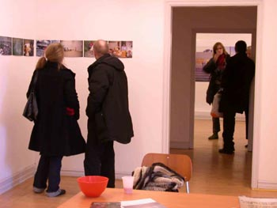
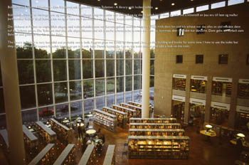
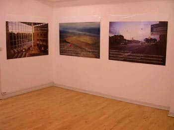
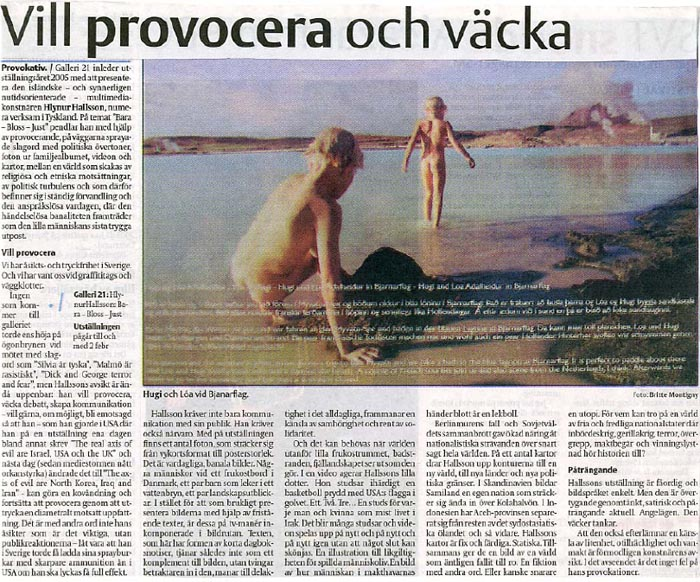

|
|
|
BARA - BLOSS - JUST
Galleri 21 Rådmangatan 5, S-211 56 Malmö
Den Isländske konstnären Hlynur Hallsson, numera bosatt i Tyskland, öppnar galleriets säsong 2005. Räkna med något utöver det vanliga där publiken bjuds in till engagemang och delaktighet.
Hallson är en mångfacetterad konstnär med kommunikation som ledmärke. Oavsett om han använder sig av vykort, filmade intervjuer eller annat så är det alltid själva utbytet, kommunikationen, som är i centrum.
I Hlynur Hallssons konst finns det en öppenhet, kvickhet och en politisk överton - inte sällan är det också underhållande.
Låt oss därför ta ett exempel med Hlynur Hallsson i huvudrollen…
Marfa är ett litet samhälle i Texas med en population på drygt 2400 invånare. Det vimlar av sådana hillbilly ställen i den amerikanska landsbygden. Vad som eventuellt gör detta samhälle intressantare än andra är det ryktas om två saker, dels att den har fått sitt namn efter Dostojevskijs bröderna Karamazov och dels att Georg Bush Jr har sitt ursprung i trakten. Vad som däremot är en realitet är Chinati Stiftelsen (skapad av Donald Judd) i staden som varje år delar ut vistelsestipendier åt internationella konstnärer.
|
Hallsson mottog stipendiet och åkte ner till Marfa i sommaren 2002. Utställningen som ägde rum I stiftelsens lokaler innefattade fyra meningar i tagliknande stil på väggarna, ”The real axis of evil are Israel, USA and the UK”, ”Ariel Sharon is the top terrorist. George W. Bush is an idiot. And Iceland is the banana republic number one".
Det uppstod naturligtvis ett fulländat kaos. Hotfulla brev, ilskna telefonsamtal bombarderade stiftelsen och tumultet nådde även kommunhuset där den chockade borgmästaren Oscar Martinez räddade sitt skinn med att säga att han tyckte bättre om klottret på tågen än Mr Hallsons konst. Schism uppstod också mellan Marfans invånare, de yngre liberala och de konservativa. Trätan och hoten blev så stora att Hallson såg sig nödgad att förtydliga att det inte nödvändigtvis var hans egna åsikter, utan det skulle snarare ses som ett sätt att få igång en diskussion och en respons. Kort därefter tog Hallson ner utställningen och målade över orden med nya och dagen därpå var det vernissage igen där det istället stod:
”The Axis of Evil is North Korea, Iraq and Iran” och “Osama bin Laden is the top terrorist. George W. Bush is a good leader. And Iceland is not a banana republic”
Hallsson förklarade något provokativt över sin förändrade utställning att ”Jag skriver bara det som människor vill läsa”…
|
Det nya verket ledde inte till någon större förändring även om hoten minskade, effekten blev istället en annan, orden betraktades snarare som ett sätt att förlöjliga och göra invånarna pinsamt medvetna om sin enfaldighet.
Bortom den uppenbara provokationen är det också ett verkligt undersökande av relationen och processen mellan ord och handling. Ett rakt laborerande med kommunikation. Hallssons konst tenderar också till att skapa en intressant och bräcklig relation mellan bild och text där de båda slits mellan att vara till lags och komplettera varandra för att stunden senare skapa distans. För oss är historien om Marfa också humor på hög nivå…
Hallssons slutsatser om det amerikanska folket är nedslående ” I think quite many Americans don’t have interest in free speech, the majority, I don’t know. My experience was, quite many people would be happy to give that one away.”
Återstår att se hur omdömet om svensken blir…
Hlynur Hallsson har ställt ut på bland andra Kunstverein i Hannover, The Balcony i Toronto, Kuckei + Kuckei i Berlin, Manchester Metropolitan University Gallery, Charlottenborg i Köpenhamn, 02 Gallery i Akureyri, Galleri i8 i Reykjavik, Overgarden i Köpenhamn.
|
 |
 |
 |
 |